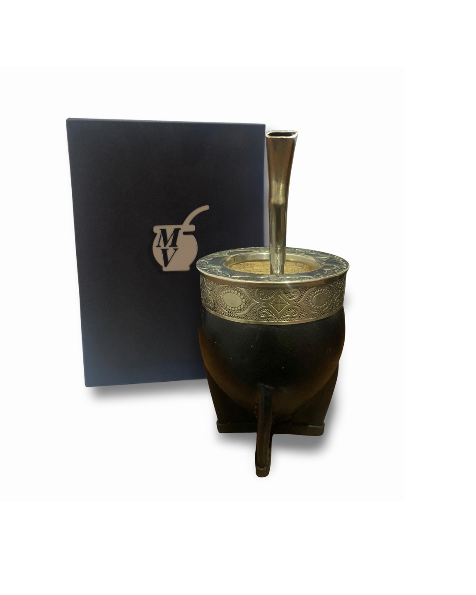
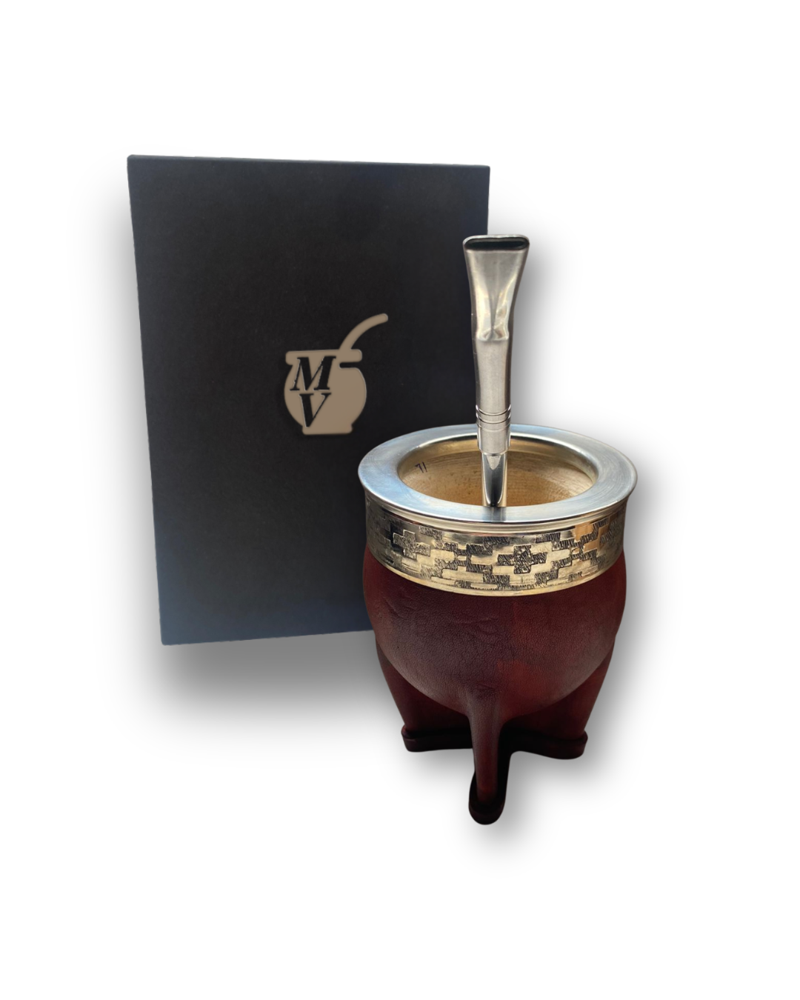
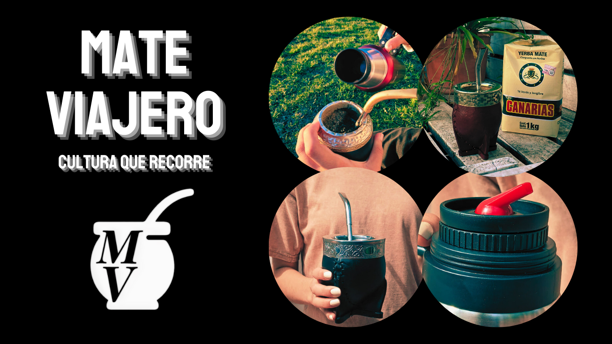

Nuestros Proyectos

Mate Imperial
Diseños artesanales elaborados con materiales de primera calidad para disfrutar la mejor experiencia matera.
Consultar
Personalización
Personalizamos mates según el gusto de cada cliente para crear un producto único y exclusivo.
Consultar
Cultura Matera
Compartimos la tradición del mate ofreciendo productos artesanales y contenido para toda la comunidad matera.
Consultar